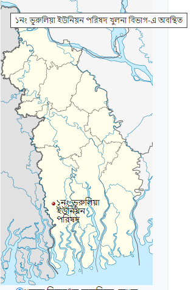

ভূরুলিয়া ইউনিয়ন
কালের স্বাক্ষী বহনকারী যমুনা নদীর তীরে গড়ে ওঠা শ্যামনগর উপজেলার একটি ঐতিহ্যবাহী অঞ্চল হলো ভূরুলিয়া ইউনিয়ন। কালপরিক্রমায় আজ ভূরুলিয়া ইউনিয়ন শিক্ষা সাংস্কৃতি ধর্মীয় অনুষ্ঠান, খেলাধুলাসহ বিভিন্ন ক্ষেত্রে তার নিজস্ব স্বকীয়তা আজও সমুজ্জ্বল।
এক নজরে ভূরুলিয়া ইউনিয়নের মৌলিক তথ্য

| আয়তনঃ ৩৮ বগকিলোমিটার । | মোট জনসংখ্যাঃ ২৩৫৭৫ |
| মোট নারীঃ ১১৬০০ | মোট পুরুষঃ ১১৯৭৫ |
| গ্রামঃ ৩০ টি । | মোট শিক্ষা প্রতিষ্টানঃ ১৬ টি । |
| স্ব্যস্থকেন্দ্র ১টি | কমিউনিটি ক্লিনিক ২টি |
| মিসন হাসপাতাল ১টি | মৌজা: ৩২ টি |
| হাট বাজার : ৫ টি | ভূমি অফিস : ১ টি |
| পোষ্ট অফিস : ১ টি | রেজি: ক্লাব : ৫ টি |
| মসজিদ: ২৫ টি | মন্দির : ১৩ টি |
| কবরস্থান: ১ টি । | শ্মশান: ৩ টি |
| মুক্তিযোদ্ধাঃ ১৩ জন | শিক্ষার হার ঃ ৭২% |
| মুসলিম ধর্ম ঃ ৯১% | বিলের সংখ্যাঃ ৭ টি |
| খালের সংখ্যাঃ ১৫ টি | আয়তনঃ ৩৯ কিঃ মিঃ |
| সরকারি পুকুর সংখ্যাঃ ৬ টি | বসতভিটার সংখ্যাঃ ১৮০০ একর |
| চিংড়ি চাষ জমির পরিমানঃ ২০০০ একর | বিদ্যুত লাইনঃ ৪৩ কিঃ মিঃ |
| রাইচ মিল ঃ ৭ টি |